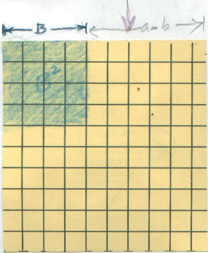

A Visualization of A2 - B2 = (A-B)(A+B)
Use a square (a 10x10 square is handy), to start. Call the side A, then the area is A2 .
 The green length on top is B, and the area of the green square is B2. The other length on top is A-B.
Cutting out B2 leaves A2 - B2.
Cut off the shaded piece above, rotate it, and put it at the bottom, as below
What's on the left is a rectangle, the width is A-B and the length is A+B and the area is still A2 - B2 ; another name for its area is (A-B) (A+B). So A2 - B2 = (A-B) (A+B).
Back to Patterns in Mathematics
Back to New Discoveries
To order
Don's materials
Mathman home